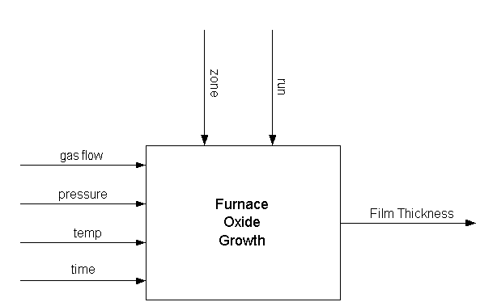
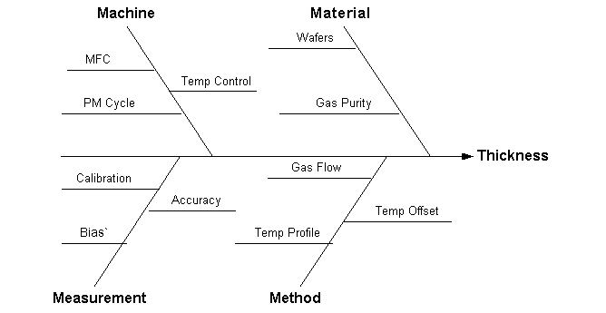

|
3.
Production
Process Characterization
3.5. Case Studies 3.5.1. Furnace Case Study
|
|||
| Introduction | In a semiconductor manufacturing process flow, we have a step whereby we grow an oxide film on the silicon wafer using a furnace. In this step, a cassette of wafers is placed in a quartz "boat" and the boats are placed in the furnace. The furnace can hold four boats. A gas flow is created in the furnace and it is brought up to temperature and held there for a specified period of time (which corresponds to the desired oxide thickness). This study was conducted to determine if the process was stable and to characterize sources of variation so that a process control strategy could be developed. | ||
| Goal | The goal of this study is to determine if this process is capable of consistently growing oxide films with a thickness of 560 Angstroms +/- 100 Angstroms. An additional goal is to determine important sources of variation for use in the development of a process control strategy. | ||
| Software | The analyses used in this case study can be generated using both Dataplot code and R code. | ||
| Process Model | In the picture below we are modeling this process with one output (film thickness) that is influenced by four controlled factors (gas flow, pressure, temperature and time) and two uncontrolled factors (run and zone). The four controlled factors are part of our recipe and will remain constant throughout this study. We know that there is run-to-run variation that is due to many different factors (input material variation, variation in consumables, etc.). We also know that the different zones in the furnace have an effect. A zone is a region of the furnace tube that holds one boat. There are four zones in these tubes. The zones in the middle of the tube grow oxide a little bit differently from the ones on the ends. In fact, there are temperature offsets in the recipe to help minimize this problem. | ||
|  |
| Sensitivity Model | The sensitivity model for this process is fairly straightforward and is given in the figure below. The effects of the machine are mostly related to the preventative maintenance (PM) cycle. We want to make sure the quartz tube has been cleaned recently, the mass flow controllers are in good shape and the temperature controller has been calibrated recently. The same is true of the measurement equipment where the thickness readings will be taken. We want to make sure a gauge study has been performed. For material, the incoming wafers will certainly have an effect on the outgoing thickness as well as the quality of the gases used. Finally, the recipe will have an effect including gas flow, temperature offset for the different zones, and temperature profile (how quickly we raise the temperature, how long we hold it and how quickly we cool it off). |
|  |
| Sampling Plan |
Given our goal statement and process modeling, we can now define a
sampling plan. The primary goal is to determine if the process is
capable. This just means that we need to monitor the process over
some period of time and compare the estimates of process location and
spread to the specifications. An additional goal is to identify
sources of variation to aid in setting up a process control strategy.
Some obvious sources of variation are incoming wafers, run-to-run
variability, variation due to operators or shift, and variation due
to zones within a furnace tube. One additional constraint that we
must work under is that this study should not have a significant
impact on normal production operations.
Given these constraints, the following sampling plan was selected. It was decided to monitor the process for one day (three shifts). Because this process is operator independent, we will not keep shift or operator information but just record run number. For each run, we will randomly assign cassettes of wafers to a zone. We will select two wafers from each zone after processing and measure two sites on each wafer. This plan should give reasonable estimates of run-to-run variation and within zone variability as well as good overall estimates of process location and spread. We are expecting readings around 560 Angstroms. We would not expect many readings above 700 or below 400. The measurement equipment is accurate to within 0.5 Angstroms which is well within the accuracy needed for this study. |
| Data |
The following are the data that were collected for this study.
RUN ZONE WAFER THICKNESS -------------------------------- 1 1 1 546 1 1 2 540 1 2 1 566 1 2 2 564 1 3 1 577 1 3 2 546 1 4 1 543 1 4 2 529 2 1 1 561 2 1 2 556 2 2 1 577 2 2 2 553 2 3 1 563 2 3 2 577 2 4 1 556 2 4 2 540 3 1 1 515 3 1 2 520 3 2 1 548 3 2 2 542 3 3 1 505 3 3 2 487 3 4 1 506 3 4 2 514 4 1 1 568 4 1 2 584 4 2 1 570 4 2 2 545 4 3 1 589 4 3 2 562 4 4 1 569 4 4 2 571 5 1 1 550 5 1 2 550 5 2 1 562 5 2 2 580 5 3 1 560 5 3 2 554 5 4 1 545 5 4 2 546 6 1 1 584 6 1 2 581 6 2 1 567 6 2 2 558 6 3 1 556 6 3 2 560 6 4 1 591 6 4 2 599 7 1 1 593 7 1 2 626 7 2 1 584 7 2 2 559 7 3 1 634 7 3 2 598 7 4 1 569 7 4 2 592 8 1 1 522 8 1 2 535 8 2 1 535 8 2 2 581 8 3 1 527 8 3 2 520 8 4 1 532 8 4 2 539 9 1 1 562 9 1 2 568 9 2 1 548 9 2 2 548 9 3 1 533 9 3 2 553 9 4 1 533 9 4 2 521 10 1 1 555 10 1 2 545 10 2 1 584 10 2 2 572 10 3 1 546 10 3 2 552 10 4 1 586 10 4 2 584 11 1 1 565 11 1 2 557 11 2 1 583 11 2 2 585 11 3 1 582 11 3 2 567 11 4 1 549 11 4 2 533 12 1 1 548 12 1 2 528 12 2 1 563 12 2 2 588 12 3 1 543 12 3 2 540 12 4 1 585 12 4 2 586 13 1 1 580 13 1 2 570 13 2 1 556 13 2 2 569 13 3 1 609 13 3 2 625 13 4 1 570 13 4 2 595 14 1 1 564 14 1 2 555 14 2 1 585 14 2 2 588 14 3 1 564 14 3 2 583 14 4 1 563 14 4 2 558 15 1 1 550 15 1 2 557 15 2 1 538 15 2 2 525 15 3 1 556 15 3 2 547 15 4 1 534 15 4 2 542 16 1 1 552 16 1 2 547 16 2 1 563 16 2 2 578 16 3 1 571 16 3 2 572 16 4 1 575 16 4 2 584 17 1 1 549 17 1 2 546 17 2 1 584 17 2 2 593 17 3 1 567 17 3 2 548 17 4 1 606 17 4 2 607 18 1 1 539 18 1 2 554 18 2 1 533 18 2 2 535 18 3 1 522 18 3 2 521 18 4 1 547 18 4 2 550 19 1 1 610 19 1 2 592 19 2 1 587 19 2 2 587 19 3 1 572 19 3 2 612 19 4 1 566 19 4 2 563 20 1 1 569 20 1 2 609 20 2 1 558 20 2 2 555 20 3 1 577 20 3 2 579 20 4 1 552 20 4 2 558 21 1 1 595 21 1 2 583 21 2 1 599 21 2 2 602 21 3 1 598 21 3 2 616 21 4 1 580 21 4 2 575 |